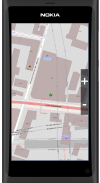
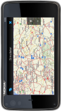
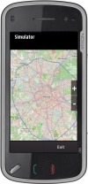
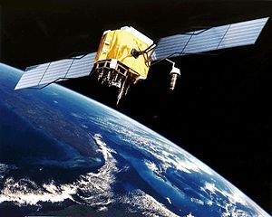
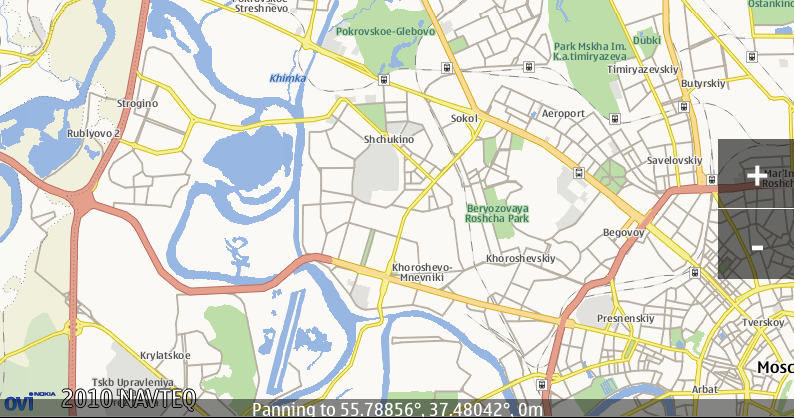

Внимание! Данная статья написана в 2011 году. Многие сведения в ней устарели, а объекты Qt сильно изменились.
В предыдущей статье мы научились писать картографическое приложение на QML, а сегодня мы рассмотрим разработку приложения на базе архитектуры графических представлений Qt Graphics View, с использованием API модуля QtLocation. Статью можно поделить на две части: теоретическую и практическую. В теоретической части рассматриваются архитектура Graphics View и основные моменты использования модуля QtLocation. В практической части я не буду описывать создание проекта с нуля, а предоставлю код наиболее интересного функционала из проекта, такого как инерционное перемещение карты, анимированный переход на заданную координату, определения местоположения по GPS, элементы для масштабирования и вывода текстовой информации.
Если вы собирали дополнительные плагины из предыдущей статьи их можно использовать и в этом проекте.
Оглавление
Архитектура графических представлений похожа на архитектуру модель/представление в том смысле, что в ней имеется класс для хранения данных QGraphicsScene и класс для визуализации этих данных QGraphicsView. Одну и ту же сцену можно визуализировать разными представлениями, если это необходимо. Графическая сцена содержит элементы — объекты классов, производных от абстрактного класса QGraphicsItem.
С самого начала в разработку архитектуры графических представлений было вложено много усилий, направленных на повышение быстродействия и расширение возможностей. Сцены можно масштабировать, поворачивать и распечатывать, а для их отображения использовать как встроенный в Qt движок, так и библиотеку OpenGL. Архитектура поддерживает также анимацию и перетаскивание мышью. Графические сцены пригодны для представления от единиц до десятков тысяч элементов, хорошей иллюстрацией может служить пример 40 000 чипов. На сцену можно помещать и виджеты, производные от QWidget, для этого нужно передать виджет конструктору класса QGraphicsProxyWidget и поместить прокси-виджет на сцену. Прокси-виджет (или сами объекты QWidget) работают медленно, но будет ли это замедление заметно, зависит от приложения (подробнее об этом написано в QtLabs[En]).
Введение в графические элементы
Класс QGraphicsItem является базовым для всех графических элементов. Создавать его экземпляры нельзя, так как в нем есть два чисто виртуальных метода: boundingRect() и paint(). Метод paint() соответствует методу QWidget::paintEvent(), его реализация должна рисовать элемент. Метод boundingRect() сообщает инфраструктуре об ограничивающем прямоугольнике элемента — он применяется для обнаружения столкновений и для того, чтобы не перерисовывать элемент, находящийся вне видимости. Этот класс предоставляет поддержку для событий мыши и клавиатуры, перетаскивания (drag&drop), группировки элементов. Обработка событий работает следующим образом, представление получает события мыши и клавиатуры, затем оно переводит их в события для сцены, изменяя координаты в соответствии с координатами сцены и далее событие передается нужному элементу.
  
Модуль QtLocation предоставляет разработчику удобный интерфейс для доступа к позиционной информации. API позволяет абстрагироваться от источника информации, которая может быть списком спутников или данными из других источников.
QtLocation, поставляется с набором классов, связанных с различными аспектами навигации. Он включает классы связанные с аппаратными средствами, такие как QGeoPositionInfoSource, который предоставляет информацию о положении пользователя с помощью системы глобального позиционирования (GPS) или другими источниками местоположения, и QGeoSatelliteInfoSource, который используется для получения информации о позиционировании спутников.
Модуль также включает в себя ряд классов основной целью, которых является описание информации о местоположении, например QGeoCoordinate, который содержит широту, долготу и высоту над уровнем моря. QtLocation также предоставляет способ представления географических районов, либо в абстрактном виде, как QGeoBoundingArea или точнее, как в QGeoBoundingBox и QGeoBoundingCircle.
Прежде чем мы сможем начать работу с картами, сценами и представлениями, в первую очередь мы должны получить доступ к источнику географических данных. Общий способ сделать это, состоит в использовании QGeoServiceProvider. Для того чтобы узнать какие сервисы доступны, можно воспользоваться QGeoServiceProvider::availableServiceProviders(), который вернет пустой QStringList в случае отсутствия доступных сервисов, так что разработчик должен проверить эту возможность:
QStringList services = QGeoServiceProvider::availableServiceProviders();
if (services.isEmpty()) {
//Доложить о ситуации и обработать ее
}
Как только сервис провайдер был получен, мы можем получить QGeoMappingManager, который позволит нам получить изображение карты.
QGeoMappingManager *manager = service.mappingManager();
Для того чтобы запросить менеджер для поиска объектов на карте или маршрутизации, нужно вызвать searchManager() или routingManager().
Чтобы отрисовать карту для пользователя, QtLocation предоставляет нам класс QGraphicsGeoMap для отображения данных из QGeoMappingManager. Все, что нам нужно сделать, это создать представление и сцену в обычном порядке, и добавить карту в сцену:
QGraphicsScene scene;
QGraphicsView view;
view.setScene(&scene);
QGraphicsGeoMap *geoMap = new QGraphicsGeoMap(manager);
scene.addItem(geoMap);

Для получения координат по GPS, необходимо создать QGeoPositionInfoSource вызвав QGeoPositionInfoSource::createDefaultSource(), который дает доступ к различной информации о коодинатах QGeoPositionInfo. Клиенты, которым требуются данные о местоположении могут подключаться к сигналу positionUpdated() , чтобы QGeoPositionInfoSource начал посылать этот сигнал необходимо вызвать startUpdates() или requestUpdate().
Пример клиента, который получает данные о местоположении:
class MyClass : public QObject
{
Q_OBJECT
public:
MyClass(QObject *parent = 0)
: QObject(parent)
{
QGeoPositionInfoSource *source = QGeoPositionInfoSource::createDefaultSource(this);
if (source) {
connect(source, SIGNAL(positionUpdated(QGeoPositionInfo)),
this, SLOT(positionUpdated(QGeoPositionInfo)));
source->startUpdates();
}
}
private slots:
void positionUpdated(const QGeoPositionInfo &info)
{
qDebug() << "Position updated:" << info;
}
};
Если регулярные обновления позиции являются обязательными, setUpdateInterval() может использоваться, чтобы определить, как часто эти обновления должны происходить. Если интервал не указан, обновления приходят, когда они доступны. Например, если клиентское приложение требует обновления каждые 30 секунд:
// Emit updates every 30 seconds if available
QGeoPositionInfoSource *source = QGeoPositionInfoSource::createDefaultSource(someParent);
if (source)
source->setUpdateInterval(30000);
Анимированный переход на заданную координату
Итак, мы получили общее представление о том как все работает, теперь можно перейти к коду. Для создания плавного передвижения карты на заданную координату нам нужно расширить функционал предоставленный классом QGraphicsGeoMap:
class GeoMap : public QGraphicsGeoMap
{
Q_OBJECT
Q_PROPERTY(double centerLatitude READ centerLatitude WRITE setCenterLatitude)
Q_PROPERTY(double centerLongitude READ centerLongitude WRITE setCenterLongitude)
public:
GeoMap(QGeoMappingManager *manager, QGraphicsItem *parent = 0);
void animatedPanTo(const QGeoCoordinate& center);
double centerLatitude() const { return center().latitude(); }
void setCenterLatitude(double lat);
double centerLongitude() const { return center().longitude(); }
void setCenterLongitude(double lon);
//...
и реализация:
void GeoMap::animatedPanTo(const QtMobility::QGeoCoordinate ¢er)
{
QGeoCoordinate curStart(this->center());
if (curStart == center)
return;
//здесь можно выводить что двигаемся на заданную координату
setStatusBarText(QString("Panning to %1").arg(center.toString(QGeoCoordinate::Degrees)));
QPropertyAnimation *latAnim = new QPropertyAnimation(this, "centerLatitude");
latAnim->setEndValue(center.latitude());
latAnim->setDuration(300);
QPropertyAnimation *lonAnim = new QPropertyAnimation(this, "centerLongitude");
lonAnim->setEndValue(center.longitude());
lonAnim->setDuration(300);
QParallelAnimationGroup *group = new QParallelAnimationGroup;
group->addAnimation(latAnim);
group->addAnimation(lonAnim);
group->start(QAbstractAnimation::DeleteWhenStopped);
}
void GeoMap::setCenterLatitude(double lat)
{
QGeoCoordinate c = center();
c.setLatitude(lat);
setCenter( c);
}
void GeoMap::setCenterLongitude(double lon)
{
QGeoCoordinate c = center();
c.setLongitude(lon);
setCenter( c);
}
Теперь при вызове animatedPanTo() карта будет плавно перемещаться на указанную координату и под нужным углом, т.е. если новая координата находится выше по отношению текущего центра, то карта будет двигаться вверх и так далее. Так как QPropertyAnimation по умолчанию не работает с QGeoCoordinate, я дополнил карту двумя свойствами, с которыми анимация умеет работать (список поддерживаемых типов). Конечно же, можно было зарегистрировать свой интерполятор и зарегистрировать QGeoCoordinate для QVariant, но со свойствами мне кажется гораздо понятнее и изящнее.
Qt включает в себя фреймворк для программирования жестов, который формирует их из серии событий, независимо от способа ввода. Жестом может быть движение мыши, прикосновение к сенсорному экрану или ряд событий из других источников. В Qt обработка жестов представлена следующими классами: QPanGesture, QPinchGesture и QSwipeGesture. «Щепок» применяется для увеличения или уменьшения изображения, в нашем случае он будет менять масштаб карты. Для его реализации в классе нужно включить обработку этого жеста, вызвав метод grabGesture(Qt::PinchGesture) и обработать его в sceneEvent() нашей карты:
bool GeoMap::sceneEvent(QEvent *event)
{
switch (event->type()) {
case QEvent::Gesture:
{
if (QGestureEvent *gesture = static_cast<QGestureEvent *>(event)) {
if (QPinchGesture *pinch = static_cast<QPinchGesture *>(gesture->gesture(Qt::PinchGesture))) {
qreal scale = qLn(pinch->scaleFactor())/qLn(2);
qreal zoom = 0;
zoom = scale > 0 ? 1 : -1;
setZoomLevel(zoomLevel() + zoom);
return true;
}
}
}
default:
break;
}
return QGraphicsGeoMap::sceneEvent(event);
}
Qt позволяет обрабатывать, наравне с жестами, события прикосновений к экрану. Чтобы принимать их для виджета нужно установить атрибут Qt::WA_AcceptTouchEvents, а для графических элементов вызвать acceptTouchEvents(true).
Kinetic Scroll — это инерционное перемещение карты, не зная как еще более точно передать этот функционал словами, я поместил видео, лучше один раз увидеть, чем сто раз прочитать. Этот функционал мы и реализуем. Итак, оставшаяся часть нашего заголовочного файла:
protected:
void mousePressEvent(QGraphicsSceneMouseEvent *event);
void mouseMoveEvent(QGraphicsSceneMouseEvent *event);
void mouseReleaseEvent(QGraphicsSceneMouseEvent *event);
void mouseDoubleClickEvent(QGraphicsSceneMouseEvent *event);
void wheelEvent(QGraphicsSceneWheelEvent *event);
void keyPressEvent(QKeyEvent * event);
void keyReleaseEvent(QKeyEvent * event);
bool sceneEvent(QEvent *event);
private slots:
void kineticTimerEvent();
private:
void panFloatWrapper(const QPointF & delta);
void applyPan(const Qt::KeyboardModifiers & modifiers);
void setStatusBarText(const QString &text);
private:
bool panActive;
bool panDecellerate;
// Fractional pan, used by panFloatWrapper
QPointF remainingPan;
// current kinetic panning speed, in pixel/msec
QPointF kineticPanSpeed;
QPoint panDir;
QTimer kineticTimer;
QTime lastMoveTime;
// An entry in the mouse history. first=speed, second=time
typedef QPair<QPointF, QTime> MouseHistoryEntry;
// A history of the last (currently 5) mouse move events is stored in order to smooth out
// movement detection for kinetic panning
QList<MouseHistoryEntry> mouseHistory;
StatusBarItem *m_statusBar;
};
Самое интересное, конечно же в реализации, сначала рассмотрим настройки для управления перемещением:
////////////////////////////////////////////////////////////////////////////////
// TODO: Some of these could be exposed in a GUI and should probably be put elsewhere in that case
// (and made non-const)
// Kinect annimation properties
static const bool enableKineticPanning = true;
// time until kinetic panning speed slows down to 50%, in msec
static const qreal kineticPanningHalflife = 160.0;
// keyboard panning speed without modifiers, in pixels/msec
static const qreal panSpeedNormal = 0.3;
// keyboard panning speed with shift, in pixels/msec
static const qreal panSpeedFast = 1.0;
// minimum panning speed, in pixels/msec
static const qreal kineticPanSpeedThreshold = 0.005;
// temporal resolution. Smaller values take more CPU but improve visual quality
static const int kineticPanningResolution = 20;
// maximum time between last mouse move and mouse release for kinetic panning to kick in
static const int holdTimeThreshold = 100;
////////////////////////////////////////////////////////////////////////////////
Думаю пояснять ничего не нужно, все понятно из комментариев.
Оставшаяся часть реализации:
void GeoMap::mousePressEvent(QGraphicsSceneMouseEvent *event)
{
setFocus();
if (event->button() == Qt::LeftButton) {
panActive = true;
// When pressing, stop the timer and stop all current kinetic panning
kineticTimer.stop();
kineticPanSpeed = QPointF();
lastMoveTime = QTime::currentTime();
}
event->accept();
}
void GeoMap::mouseMoveEvent(QGraphicsSceneMouseEvent *event)
{
if (panActive) {
setCursor(Qt::ClosedHandCursor);
// Calculate time delta
QTime currentTime = QTime::currentTime();
int deltaTime = lastMoveTime.msecsTo(currentTime);
lastMoveTime = currentTime;
// Calculate position delta
QPointF delta = event->lastPos() - event->pos();
// Calculate and set speed
if (deltaTime > 0) {
kineticPanSpeed = delta / deltaTime;
mouseHistory.push_back(MouseHistoryEntry(kineticPanSpeed, currentTime));
mouseHistory.pop_front();
}
// Pan map
panFloatWrapper(delta);
}
event->accept();
}
void GeoMap::mouseReleaseEvent(QGraphicsSceneMouseEvent * event)
{
if (event->button() == Qt::LeftButton && panActive) {
panActive = false;
setCursor(Qt::OpenHandCursor);
if (!enableKineticPanning ||
lastMoveTime.msecsTo(QTime::currentTime()) > holdTimeThreshold) {
return;
}
kineticPanSpeed = QPointF();
int entries_considered = 0;
QTime currentTime = QTime::currentTime();
foreach(MouseHistoryEntry entry, mouseHistory) {
// first=speed, second=time
int deltaTime = entry.second.msecsTo(currentTime);
if (deltaTime < holdTimeThreshold) {
kineticPanSpeed += entry.first;
entries_considered++;
}
}
if (entries_considered > 0) kineticPanSpeed /= entries_considered;
lastMoveTime = currentTime;
// When releasing the mouse button/finger while moving,
// start the kinetic panning timer
kineticTimer.start();
panDecellerate = true;
}
event->accept();
}
void GeoMap::mouseDoubleClickEvent(QGraphicsSceneMouseEvent * event)
{
setFocus();
animatedPanTo(screenPositionToCoordinate(event->pos()));
event->accept();
}
// ...
void GeoMap::kineticTimerEvent()
{
QTime currentTime = QTime::currentTime();
int deltaTime = lastMoveTime.msecsTo(currentTime);
lastMoveTime = currentTime;
if (panDecellerate)
kineticPanSpeed *= qPow(qreal(0.5), qreal(deltaTime / kineticPanningHalflife));
QPointF scaledSpeed = kineticPanSpeed * deltaTime;
if (kineticPanSpeed.manhattanLength() < kineticPanSpeedThreshold) {
// Kinetic panning is almost halted -> stop it.
kineticTimer.stop();
return;
}
panFloatWrapper(scaledSpeed);
}
// Wraps the pan(int, int) method to achieve floating point accuracy,
// which is needed to scroll smoothly.
void GeoMap::panFloatWrapper(const QPointF & delta)
{
// Add to previously stored panning distance
remainingPan += delta;
// Convert to integers
QPoint move = remainingPan.toPoint();
// Commit mouse movement
pan(move.x(), move.y());
// Store committed mouse movement
remainingPan -= move;
}
Я опустил реализацию обработки клавиатуры, с ней вы можете ознакомиться, скачав весь проект. Реализация инерционного перемещения взята чуть менее, чем полностью из этого примера, спасибо разработчикам за прекрасную документацию и отличные примеры.

Теперь давайте рассмотрим элемент для вывода различной текстовой информации в статусной строке.
Элемент при показе текста сначала плавно появляется, задерживается на заданное время и плавно скрывается. Итак, начнем с объявления:
// An animated status bar item that appears at the bottom
// of the map
class StatusBarItem : public QObject, public QGraphicsRectItem
{
Q_OBJECT
Q_PROPERTY(int offset READ offset WRITE setOffset)
public:
explicit StatusBarItem();
~StatusBarItem();
int offset() const;
void setRect(qreal x, qreal y, qreal w, qreal h);
public slots:
void setText(QString text);
void showText(QString text, quint32 timeout=3000);
void show();
void hide();
void setOffset(int offset);
private:
int m_offset;
QGraphicsSimpleTextItem *m_textItem;
};
Во-первых, сам по себе элемент представляет собой прямоугольник, который в себе содержит QGraphicsSimpleTextItem и просто управляет им. Давайте рассмотрим реализацию этого класса:
StatusBarItem::StatusBarItem()
{
m_offset = 0;
setPen(QPen(QBrush(), 0));
setBrush(QBrush(QColor(0,0,0,120)));
m_textItem = new QGraphicsSimpleTextItem(this);
m_textItem->setBrush(QBrush(Qt::white));
setText("");
}
StatusBarItem::~StatusBarItem()
{
}
void StatusBarItem::setText(QString text)
{
m_textItem->setText(text);
QRectF rect = m_textItem->boundingRect();
QPointF delta = this->rect().center() - rect.center();
m_textItem->setPos(delta.x(), delta.y());
}
int StatusBarItem::offset() const
{
return m_offset;
}
void StatusBarItem::setRect(qreal x, qreal y, qreal w, qreal h)
{
QGraphicsRectItem::setRect(x, y + m_offset, w, h);
QFont f;
f.setFixedPitch(true);
f.setPixelSize(h/1.1);
m_textItem->setFont(f);
setText(m_textItem->text());
}
void StatusBarItem::setOffset(int offset)
{
this->setY(this->y() - m_offset + offset);
m_offset = offset;
}
void StatusBarItem::showText(QString text, quint32 timeout)
{
setText(text);
show();
QTimer::singleShot(timeout, this, SLOT(hide()));
}
void StatusBarItem::show()
{
QPropertyAnimation *anim = new QPropertyAnimation(this, "offset");
anim->setStartValue(0);
anim->setEndValue(-1 * rect().height());
anim->setDuration(500);
anim->start(QAbstractAnimation::DeleteWhenStopped);
}
void StatusBarItem::hide()
{
QPropertyAnimation *anim = new QPropertyAnimation(this, "offset");
anim->setStartValue(m_offset);
anim->setEndValue(0);
anim->setDuration(500);
anim->start(QAbstractAnimation::DeleteWhenStopped);
}
Анимация управляет позицией элемента и в зависимости от метода, либо тянет элемент вверх, либо вниз. Девиз Qt «Code Less. Create More.» работает в полной мере.
Здесь я хотел рассмотреть реализацию кнопок для масштабирования, но в последний момент передумал (увидев объем получившейся статьи) и лишь опишу основной принцип его работы. Итак, это обычный QGraphicsRectItem, который содержит два текстовых элемента, для отображения + и -, и QGraphicsLineItem для визуального разделения. Элемент реагирует на действия пользователя и по нажатию он либо увеличивает, либо уменьшает масштаб карты:
//в зависимости куда нажал пользователь масштаб увеличивается
//либо на один, либо на минус один и 0 если ни то ни се
m_geoMap->setZoomLevel(m_geoMap->zoomLevel() + zoomLevel(event->pos()));
В принципе элемент можно было реализовать одним наследованием от QGraphicsItem и просто нарисовать нужную нам информацию, но я подумал, что работа с различными графическими элементами более наглядна. Кто хочет, может изменить этот класс, после он будет потреблять немного меньше памяти.
Для того, чтобы QGraphicsView использовал OpenGL для отрисовки, нужно всего лишь установить QGLWidget таким образом:
#ifndef QT_NO_OPENGL
setViewport(new QGLWidget(QGLFormat(QGL::SampleBuffers)));
viewport()->setMouseTracking(true);
setRenderHint(QPainter::HighQualityAntialiasing, true);
#endif
И установить флаг для QGraphicsView, так как QGLWidget не поддерживает частичные обновления экрана:
graphicsView->setViewportUpdateMode(QGraphicsView::FullViewportUpdate);
Так же если у вас много анимированных или перемещающихся элементов в сцене, то для лучшей производительности можно отключить индексацию элементов:
graphicsScene->setItemIndexMethod(QGraphicsScene::NoIndex);
Индексирование отлично подходит для статичных элементов сцены, оно повышает поиск элементов сцены в таких функциях как items() и itemAt(). Так же можете рассмотреть оптимизирующие флаги для QGraphicsView.
Статья получилась большая, и мне кажется, ее можно расширять бесконечно. Мы не рассмотрели API поиска объектов, прокладку маршрута и работу с API Landmark (если кого заинтересует, посмотрите пример 1 и 2). В статье мы познакомились с Graphics View Framework, основными моментами при использовании API QtLocation, я надеюсь, научились работать с Animation Framework и рассмотрели реализацию инерционного перемещения карты, различных элементов для управления картой и вывода текстовой информации. В общем, получился хороший компонент для отображения карты, который можно расширить до полноценного навигатора. Чтобы попробовать приложение в действии, необходимо установить Qt SDK и скопмилировать проект для эмулятора Qt. Напоследок немного полезных ссылок.
P.S. Приветствуются комментарии к статье, это будет очень полезно, для такого не опытного автора как я. Заранее спасибо.